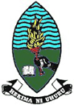

Eastern Arc Mountains, Tanzania

The Eastern Arc Mountains are one of Africa’s most ancient and precious resources. Magnificent rainforests, nurtured by winds from the Indian Ocean, have thrived here for more than 20 million years. But today, after decades of steady logging, fires and farmland conversion, these forests have been reduced by approximately 70% in area; only 3,300 km2 of forest remains, fragmented across 13 mountain blocks.
Local villagers depend on the woodlands for firewood, medicinal plants, lumber and meat. The forests also sustain half a dozen rivers flowing into populated regions of Tanzania, maintaining a fresh-water supply for more than 3 million people.
The region’s pleasant climate, exceptional beauty and rare wildlife, including dozens of birds, chameleons, tree frogs, and other species found nowhere else, draw increasing numbers of tourists from all over the world. The mountains also harbor more than 2,000 plant species exclusive to this area.
Environmental organizations including Birdlife International, Conservation International, Wildlife Conservation Society and World Wildlife Fund have been working in the Eastern Arc for more than a decade to try to preserve life-support systems threatened by regional development. In recent years, for example, deforestation has contributed to low flows on the Ruvu and Ruaha Rivers, leaving millions of people and major industries short of water in Dar es Salaam and hundreds of thousands without hydropower-derived electricity.
The Natural Capital Project is collaborating in the Eastern Arc Mountains with an international team of scientists and policy experts funded by the Leverhulme Trust and the Packard Foundation. This partnership, named, “Valuing the Arc,” began with a November 2006 workshop in Dar es Salaam, attended by experts in the science and conservation of ecosystem services from seven countries. Since then, work has begun on analyzing five of these life-support systems including water supply, carbon storage and sequestration, ecotourism, and non-timber and timber products. Working arrangements with Tanzanian university collaborators have been solidified and meetings with key decision-makers and international donors based in the region have been held.
The major goal for this demonstration site is to provide a scientific basis for new programs in which local residents can receive payments for maintaining natural assets, such as forests that regulate water supplies. To support these efforts, a team of Tanzanian, British, South African, and American researchers aims to calculate and map the remnant forest’s economic value to Tanzania’s citizens and others, and to show the economic consequences of different policy options.
Publications
Eastern Arcs, Tanzania Site Brochure
Our Partners
